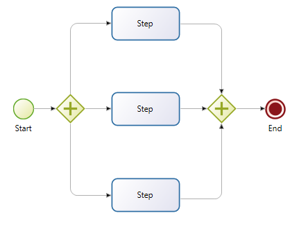
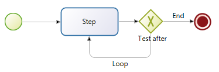

Iteration
Iteration means performing a task multiple times.
You can start several instances of a task at the same time, which is call multi-instantiation, or you can start another instance of a task when the previous one finished, which is called a loop. You can iterate a task or a call activity. If you have several tasks in sequence that need to be iterated, groups them into a subprocess and define the iteration on the call activity that calls the subprocess.
Multi-instantiation
Use multi-instantiation if you want several instances of a task to be performed in parallel. For example, in a process for reviewing a document, you would issue the document to all reviewers at the same time, then collect all their feedback before moving to the next step.

To configure multi-instantiation, select the element in the diagram and go to the Details panel, General tab, Iteration pane. Specify the following:
- Select Parallel or Sequential Multi-instantiation.
- Specify how many instances of the task you want. You can:
- Specify a defined number: Check Create a defined number of instances, open the expression editor, set the expression type to Constant, and enter the number. You can also set the number by using the value of an integer parameter or variable.
- Define an expression: Check Create a defined number of instances, open the expression editor, set the expression type to Script, and define the script. This is useful if the number of iterations is conditional on some information in the process. The script must return an integer.
- Specify the number of iterations from a list: Check Create instances from a list, and choose the list from the existing lists or multiple data.
- If you are using a list, you may also edit the name of the multiInstanceIterator, a reference that takes the value of each item in the list to create the corresponding instance. Make sure that it has the same type as the list items. To access the referenced data use the same REST API format for retrieving data either using the caseId as in:
../API/bpm/case//context
or in the context of a process form:
../
replacing
businessVariableNamewithmultiInstanceIteratoror if you edited thereference nameuse thisreference nameinstead ofbusinessVariableName. - If you want to save the results of user activities during all instances, check the Store output result box and specify:
- The result data of each instance to be stored in the output list
- The final list of appended results
- Specify the early completion condition. This is a Boolean that determines whether the iteration is complete. For example, if you have a maximum of 10 possible instances of a task and you require at least 8 to be completed, you could define a counter called completed_instances and set the completion condition to true when completed_instances reaches or exceeds 8. In this expression you have access to the following provided variables :
numberOfActiveInstances: the number of instances that are currently active, that is, not yet finished (for a sequential multi-instance task, this will always be 1)numberOfTerminatedInstances: the number of instances terminated, successfully or notnumberOfCompletedInstances: the number of instances terminated successfullynumberOfInstances: the total number of instances
Loops
Use a loop if you want a task to be performed several times, one after another, with no result data, until a condition is met. The condition can be a number of iterations, or can be set as an expression. The test for the condition can be done at the end of an iteration or at the start.


To configure a loop, select the element in the diagram and go to the Details panel, General tab, Iteration pane. Specify the following:
- Select Standard loop.
- Specify whether the loop completion test is done before or after the task is performed.
- In the Loop while field, specify the condition for continuing to loop. Define the condition as an expression. Here may use a provided variable named
loopCounter. - In the Maximum loop field, specify the maximum number of times the loop is to be repeated. If you know in advance the number of times the loop should be executed, you can set this in the Maximum loop field, and set a Loop while condition that is always true. This is optional, but we recommend that you set a limit to avoid infinite loops and errors if a process gets stuck.